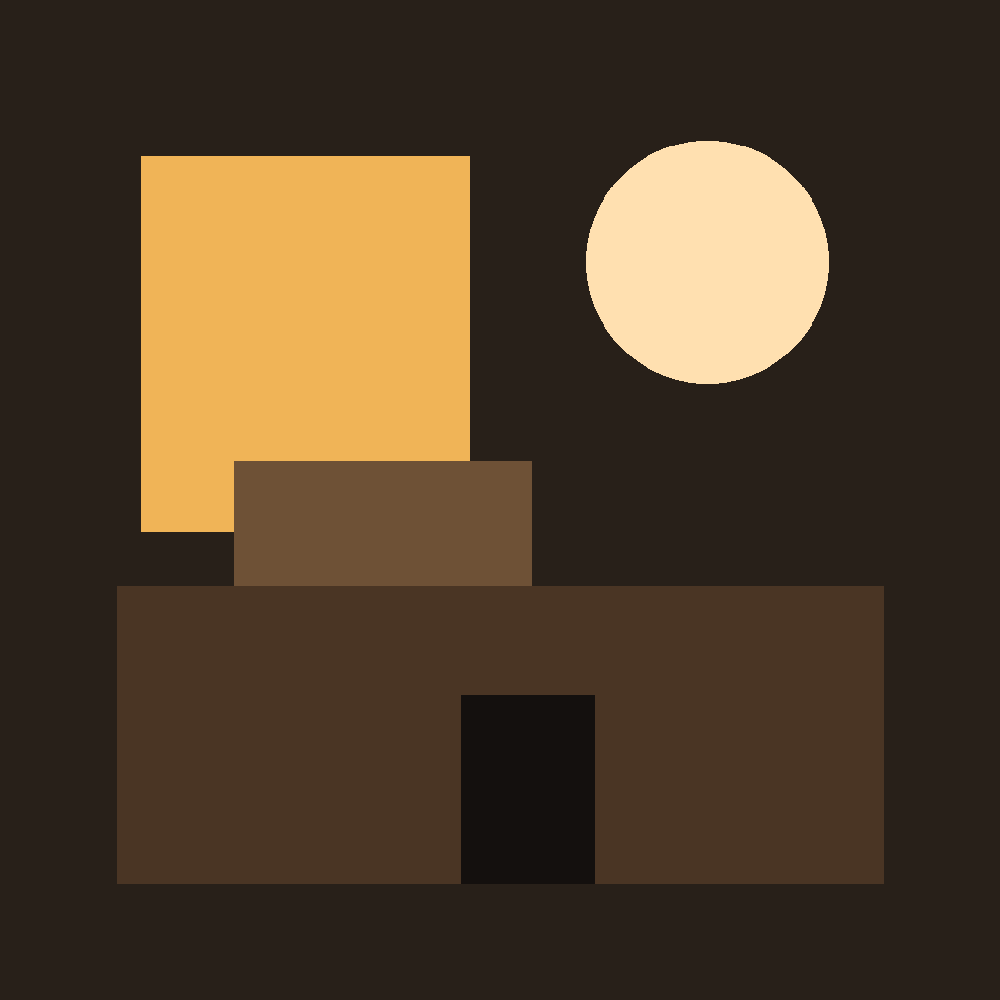
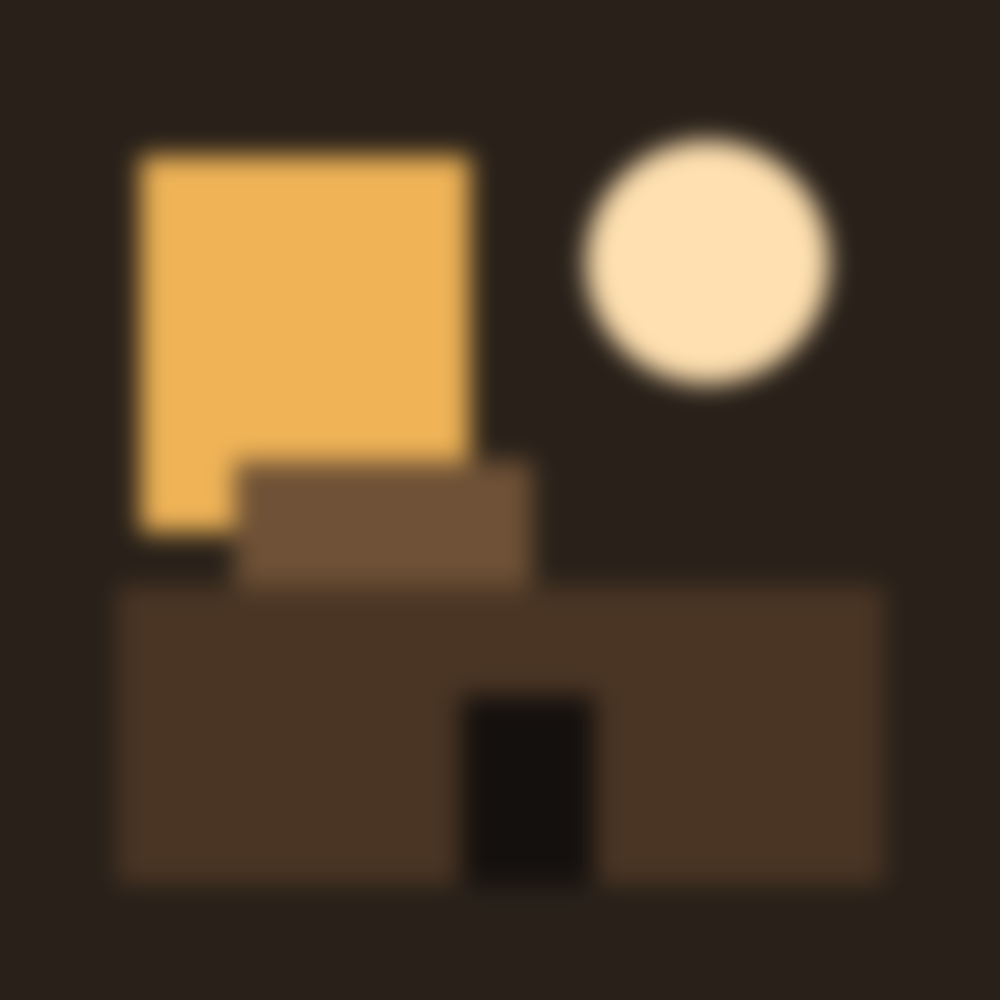

PRD v0.2 §15 menetapkan bahwa platform dapat menurunkan resolusi texture besar, dan menyarankan fallback: satu sheet per bukti, grid terbatas maksimum 6x6, atau gaya ilustrasi flat yang tahan downscale. Halaman ini menguji ketiganya pada gambar nyata 1024 px yang diturunkan bertahap sampai 128, dan mengoreksi satu dugaan yang ternyata tidak terbukti.

Gaya A, flat. Tiap bidang satu warna rata, tepi keras. Zona transisi tepinya 0,5 px pada skala 256. Detail terkecil adalah pintu 34x48 px. DIPILIH

Gaya B, bertepi lembut. Bentuk, warna, dan posisi identik dengan gaya A, hanya tepinya digambar sebagai ramp landai. Zona transisinya 8 px pada skala 256, jadi tidak ada batas tegas yang bisa dipertahankan resampler. DITOLAK
Kedua gambar ini dihasilkan make_style_samples.py dari token yang sama di
tokens.css, lalu diukur measure_downscale.py. Karena komposisinya
identik, selisih hasil ukur hanya berasal dari cara tepinya digambar.
Semua angka di bawah keluar dari measure_downscale.py. Skala 0 sampai 255,
luma Rec. 601. Kontras adalah selisih kecerahan area menyala dan area gelap.
Detail adalah selisih kecerahan pintu dengan dinding di belakangnya.
| Gaya | Ukuran | Terang | Gelap | Kontras | Detail |
|---|---|---|---|---|---|
| A, flat | 1024 | 178,5 | 33,6 | 144,9 | 40,4 |
512 | 178,5 | 33,6 | 144,9 | 40,4 | |
256 | 178,4 | 33,6 | 144,8 | 40,4 | |
128 | 178,5 | 33,6 | 144,9 | 40,4 | |
| B, lembut | 1024 | 178,0 | 33,6 | 144,4 | 39,4 |
512 | 178,0 | 33,6 | 144,4 | 39,5 | |
256 | 178,0 | 33,6 | 144,5 | 39,4 | |
128 | 177,9 | 33,6 | 144,3 | 39,5 |
Temuan pertama, dan ini mengoreksi dugaan awal: downscale tidak menurunkan kontras bidang. Pada kedua gaya, kontras berubah 0,0% dari 1024 ke 128 px. Jadi masalahnya bukan warna yang memudar, melainkan batas bentuk yang hilang.
| Gaya | Lebar zona transisi tepi, skala 256 | Putusan |
|---|---|---|
| A, flat | 0,5 px | tepi keras |
| B, lembut | 8,0 px | tepi landai |
Temuan kedua. Tepi gaya B butuh 8 px untuk berpindah dari warna dinding ke warna pintu, sedangkan gaya A selesai dalam 0,5 px. Artinya pada gaya B, sebuah pintu 34 px kehilangan hampir seperempat lebarnya menjadi zona kabur, dan tidak ada garis batas yang bisa dipertahankan saat texture diturunkan. Inilah alasan sebenarnya gaya flat dipilih, bukan karena warnanya.
| Sisi fitur, skala 256 | Kedalaman setelah turun ke 128 px | Putusan |
|---|---|---|
2 | 0,80 | tidak utuh |
3 | 0,98 | utuh |
4 | 1,05 | utuh |
6 | 1,07 | utuh |
8 | 1,06 | utuh |
16 | 1,06 | utuh |
Temuan ketiga. Fitur 3 px pada skala 256 masih utuh setelah gambar turun ke 128 px; yang 2 px melemah ke 0,80. Angka di atas 1,00 muncul karena LANCZOS sedikit menajamkan tepi, jadi bukan galat. Titik lemahnya di 2 px, dan ambang produksi dipasang di 6 px, yaitu 2x lipat titik lemah, untuk menutup kompresi texture dan resampler perangkat yang bukan LANCZOS. Pada sel yang tampil 170 px, 6 px di skala 256 setara 4 px di layar.
6x6 = 36 sel. Pada sheet 1024 px tiap sel hanya 170x170 px. Itu batas aman terakhir. Grid 8x8 memberi sel 128 px dan mulai kehilangan detail.
| Ukuran sheet | Sel 6x6 | Sel 8x8 | Putusan |
|---|---|---|---|
1024 | 170 | 128 | 6x6 aman |
512 | 85 | 64 | 8x8 terlalu kecil |
256 | 42 | 32 | tidak layak |
Angka sel berasal dari pembagian langsung ukuran sheet. Ambang 64 px diambil dari ASUMSI praktik umum UI: di bawah itu detail seperti goresan tinta dan lipatan kertas hilang saat texture diturunkan perangkat. Verifikasi perangkat nyata ada di EXTA-40.
| Jenis texture | Batas resmi | Sumber | Implikasi untuk sheet bukti |
|---|---|---|---|
| Texture umum (gambar UI, decal) | 4096x4096 |
dokumentasi Roblox, texture-specifications | Sheet bukti 1024 aman, tidak perlu dipecah karena batas unggah |
| PBR / UV texture map | 1024x1024 |
dokumentasi Roblox, texture-specifications | Hanya relevan bila potongan puzzle jadi material 3D, bukan gambar UI |
| Rekomendasi ukuran per ukuran objek | 256 untuk 5x5 stud |
dokumentasi Roblox, texture-specifications | Potongan puzzle yang tampil kecil di meja cukup 256 |
Engine Roblox memuat texture mulai dari versi kualitas rendah lalu menaikkannya sesuai kemampuan perangkat. Jadi gambar harus tetap terbaca pada versi terendah, bukan hanya pada versi penuh. Inilah alasan gaya flat dipilih: kegagalannya bertahap, bukan mendadak.
| Properti | Tipe | Perilaku resmi | Aturan pakai di Triangulate |
|---|---|---|---|
ImageRectOffset | Vector2 | Offset piksel dari sudut kiri atas gambar | Dihitung server dari indeks sel, dikirim ke client sebagai satu angka |
ImageRectSize | Vector2 | Ukuran piksel area yang ditampilkan. Bila salah satu dimensi 0, seluruh gambar ditampilkan | Selalu diisi eksplisit. Nilai 0 hanya dipakai sengaja untuk menampilkan seluruh sheet |
ResampleMode | Enum.ResamplerMode | Menentukan cara penskalaan gambar | Pixelated untuk potongan bergaya cetak, Default untuk foto bukti |
Dokumentasi resmi menyebut sprite sheet sebagai pemakaian yang disarankan: menggabungkan banyak gambar kecil ke satu texture membuat aset lebih cepat dimuat. Untuk meja puzzle ini berarti satu sheet per bukti berisi seluruh potongannya, bukan satu unggahan per potongan.